How many services does a community need?
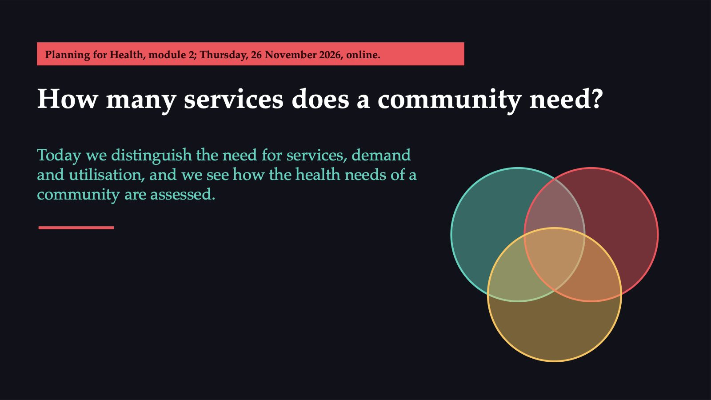
1 / 67Welcome to the second module. Today we do not start from definitions, but from a real document and from a question that every plan asks itself: how many services does a community need, and how do we know?
How we work today, online
![OPENING How we work today, online For your answers we use a single page: menti.com, with the code 1208 5895. Join now and keep the page open until the end. You work in teams of three or four people, in the separate rooms of the meeting. Each team writes a calculation annex in two parts, that is, what a planner would put in the annex of a plan: the calculation and its assumptions. You do the calculations on the team's Excel sheet, in your room; one team member sends the sentences in Mentimeter when you return. ? On Mentimeter we ask you only for opinions and proposals. At the end, a Kahoot checks the concepts of the module. Have a calculator and a spreadsheet ready. menti.com · 1208 5895](diapozitive/C02/002.jpg) 2 / 67
2 / 67You work in small teams, in the separate rooms, on a calculation annex in two parts: the first about palliative care in Hunedoara county, the second about stroke in the West region. A few teams present their annex at the end. You will also find the links and the codes in the meeting chat.
How the module unfolds
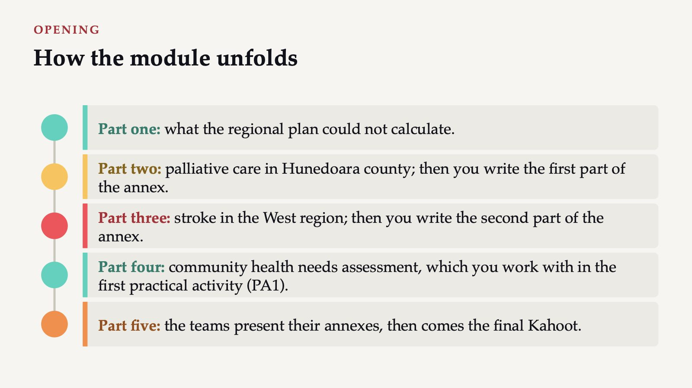
3 / 67The module has five parts. In each, the situation comes before the concept: first you see what the plan says, then you receive the tool with which you read it.
?
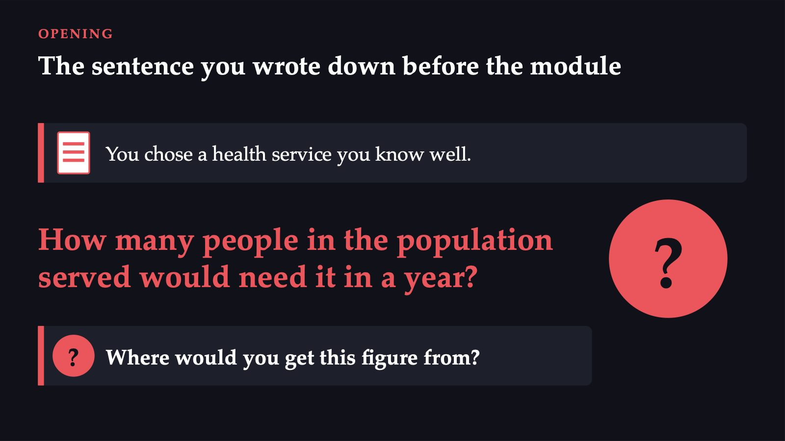
4 / 67As preparation, you wrote down a sentence about a service you know. Write it now in the meeting chat. At the end you will compare it with today's methods.
Today's case is a real plan, published by the ministry
![PART ONE: WHAT THE PLAN COULD NOT CALCULATE Today's case is a real plan, published by the ministry It is the regional master plan for health services for the West region. For each county, the plan describes the existing hospital beds and proposes a future configuration. The Ministry of Health published it in 2023, for Arad, Caraș-Severin, Hunedoara and Timiș counties. It was prepared in a project co-financed by the European Social Fund. The course leader coordinated the preparation of this master plan.](diapozitive/C02/005.jpg) 5 / 67
5 / 67Today's case is real. In 2023 the Ministry of Health published the regional master plan for health services for the West region. The course leader coordinated its preparation. The document is public, and you have it on screen and on the module page.
351,253
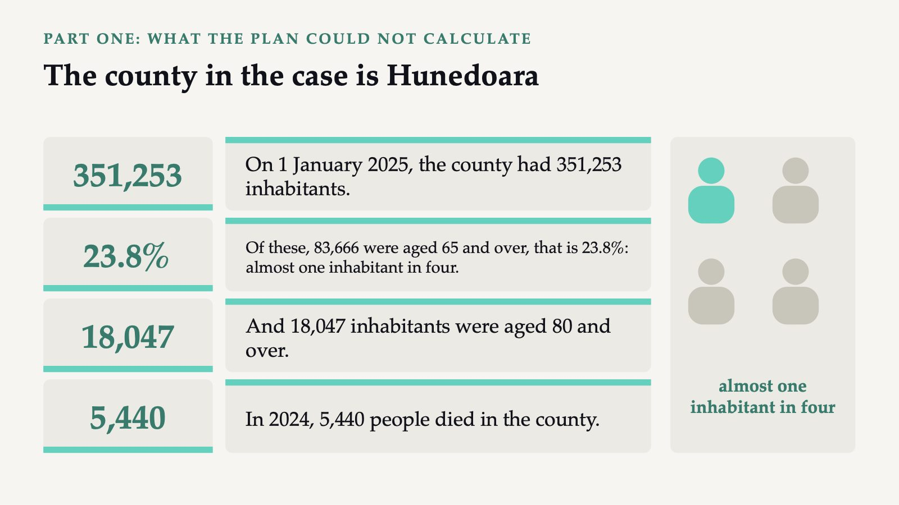
6 / 67The part on palliative care focuses on Hunedoara, a county with an ageing and declining population. Almost one inhabitant in four is aged 65 and over.
How many palliative care services does the county need?
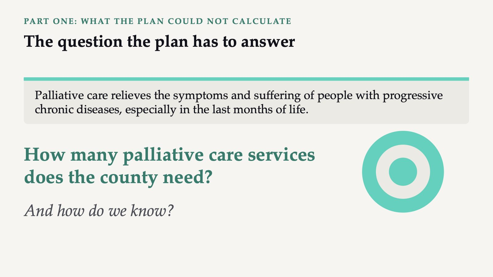
7 / 67This is the question a regional plan asks itself, and the one you work on today.
?
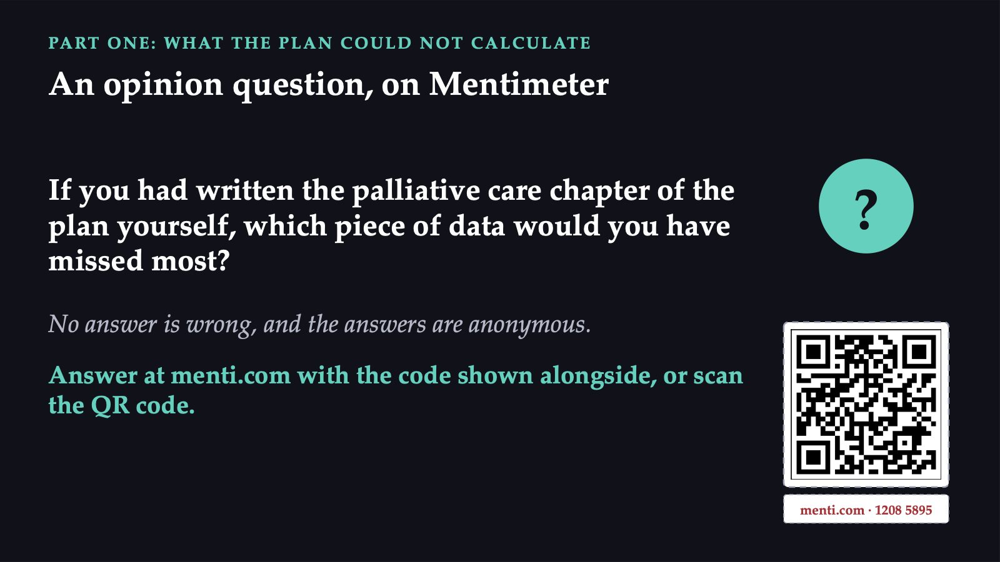
8 / 67Before any figure, an opinion question. Any reasoned opinion is welcome. A little later we compare your answers with what the plan team was missing.
What the plan says about the beds in Hunedoara
![PART ONE: WHAT THE PLAN COULD NOT CALCULATE What the plan says about the beds in Hunedoara 2,594 beds were approved for acute care and 1,017 beds for chronic care, rehabilitation and palliative care, 3,611 in total. The plan proposes 1,227 acute care beds. This leaves 1,363 surplus beds, which, depending on local needs, may be allocated to chronic care, rehabilitation and palliative care wards. The future number of beds remained „în curs de finalizare la nivel local” [being finalised at local level].](diapozitive/C02/009.jpg) 9 / 67
9 / 67For each county, the plan describes the existing beds and proposes a future configuration. In Hunedoara, after the reduction in acute care beds, a surplus remains, which the plan leaves, depending on local needs, to chronic care, rehabilitation and palliative care wards.
What the plan does when data are missing
![PART ONE: WHAT THE PLAN COULD NOT CALCULATE What the plan does when data are missing Regional master plan of health services, West region, Ministry of Health, 2023, p. 57 The plan writes, for each county in the region: „în lipsa datelor necesare, propunerea tehnică a fost realizată prin considerarea unui număr de paturi aprobate pentru anul 2023 egal cu cel din 2019, iar numărul de cazuri și durata de spitalizare pentru întregul an 2023 au fost estimate pe baza informațiilor disponibile pentru lunile ianuarie-iunie 2023” ? In short: the plan assumed that the beds in 2023 were those of 2019 and estimated the whole year from the first six months.](diapozitive/C02/010.jpg) 10 / 67
10 / 67This is the sentence the plan repeats for each county in the region. When data are missing, the planner starts from what exists, that is, from approved beds and hospitalised cases, and writes down the assumption.
What the plan team could not calculate
![PART ONE: WHAT THE PLAN COULD NOT CALCULATE What the plan team could not calculate If you wrote “how many people are in need”: the plan's authors had the same gap. The team could not calculate the real need for palliative care. If you wrote “how many people are ill”: the real figures for diseases could not be calculated either. Incidence data (new cases) and prevalence data (all existing cases) are not reliable, the course leader says. ? If you wrote something else: keep it; we look for it in the next parts. There were two kinds of data: hospital morbidity, that is, patients discharged from hospitals, by diagnosis, and deaths.](diapozitive/C02/011.jpg) 11 / 67
11 / 67The course leader, who coordinated the preparation of the plan, reports that the team could not calculate two things: the real need for palliative care and the real figures for diseases. There were data on hospital morbidity and on deaths; incidence and prevalence data, the course leader says, are not reliable.
The question we return to throughout the module
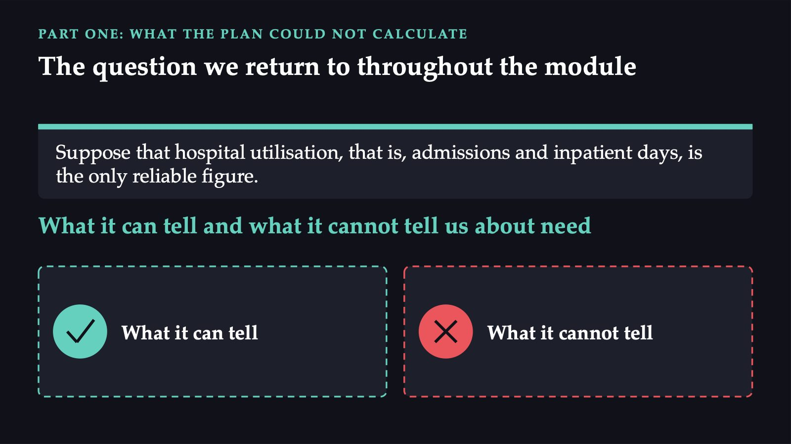
12 / 67Keep this question in mind. Each part of the module gives a piece of the answer.
62
![PART TWO: PALLIATIVE CARE IN HUNEDOARA COUNTY What the county had in 2019, according to the plan 62 704 19.06 59.29% 16.2 It had 62 palliative care beds, in five units. 704 cases were discharged, with a total of 13,417 inpatient days. The average length of stay, that is, the average number of days a case spent in hospital, was 19.06 days. The bed occupancy rate, that is, the share of the year in which the beds were occupied, was 59.29%. The county had 16.2 beds per 100,000 population; the region had 13 units with 316 beds, that is 17.8 per 100,000.](diapozitive/C02/013.jpg) 13 / 67
13 / 67These are the figures in the plan for palliative care in Hunedoara, in 2019. Remember two of them: the number of discharged cases and the occupancy rate. You use them in the annex.
How the plan calculates what is missing: with a norm
 14 / 67
14 / 67The plan applies a norm taken from a 2017 report assessing the need for palliative care. The norm refers to the number of inhabitants.
210
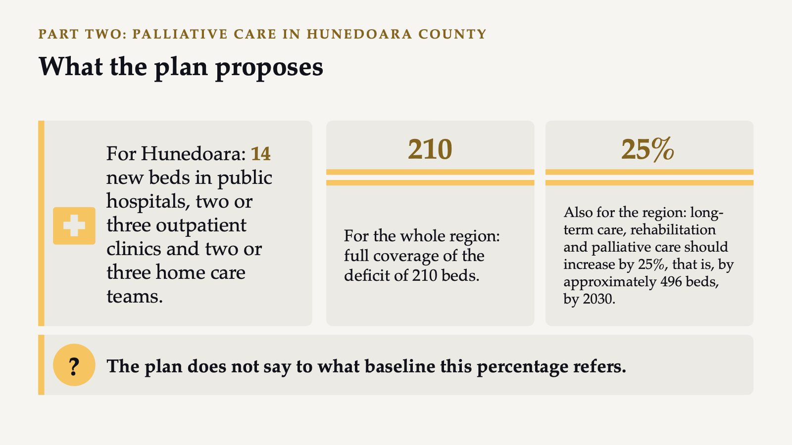
15 / 67The plan did what could be done with the available data: it started from beds and from a norm. The percentage increase concerns the region and the three types of care together, not only palliative care in Hunedoara.
A claim to check
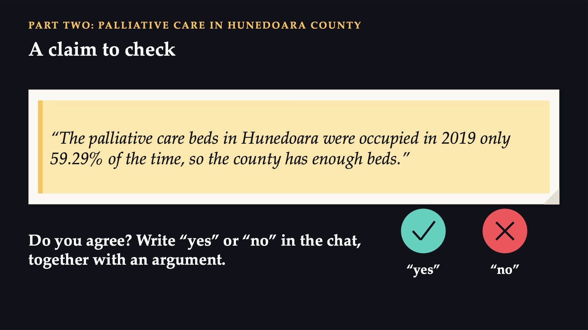
16 / 67Read the claim. You might hear it at a county council meeting. Write in the chat whether you agree and why. We return to it after we see what the occupancy rate actually measures.
How the utilisation indicators are linked
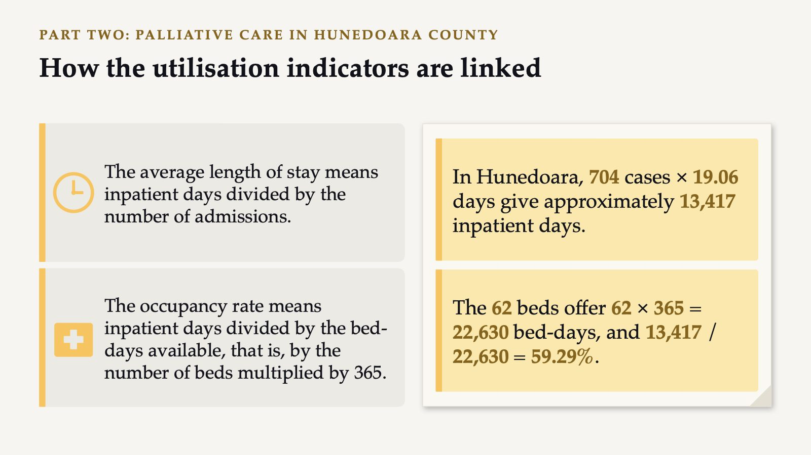
17 / 67Utilisation is measured through volume and intensity indicators: admissions, inpatient days, the average length of stay, the occupancy rate, consultations. The indicators in the plan are linked to one another, and this link is the first task in the annex. The occupancy rate says how much of the capacity was used.
Four different quantities: need, want, demand and utilisation
 18 / 67
18 / 67The textbook describes demand as the combined result of needs, wants, recommended standards and actual utilisation. Here we keep them separate, because they are measured differently. Need is set by professionals and is estimated from epidemiological data. Utilisation is the only one that is recorded directly, in the records of providers and of health insurance houses.
The four quantities overlap only in part
 19 / 67
19 / 67Planning tries to bring the four circles as close to one another as possible: to increase utilisation where need is not met and to reduce it where it exceeds need.
Why utilisation does not measure need
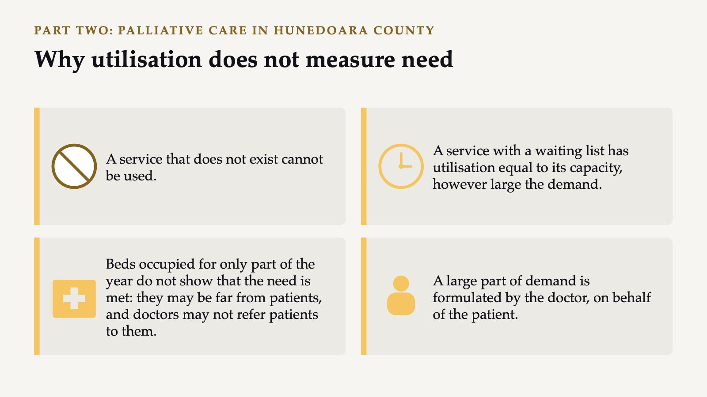
20 / 67Utilisation depends on demand, but also on supply. For this reason, past utilisation is a weak indicator of need for underdeveloped services, such as palliative care.
5,440
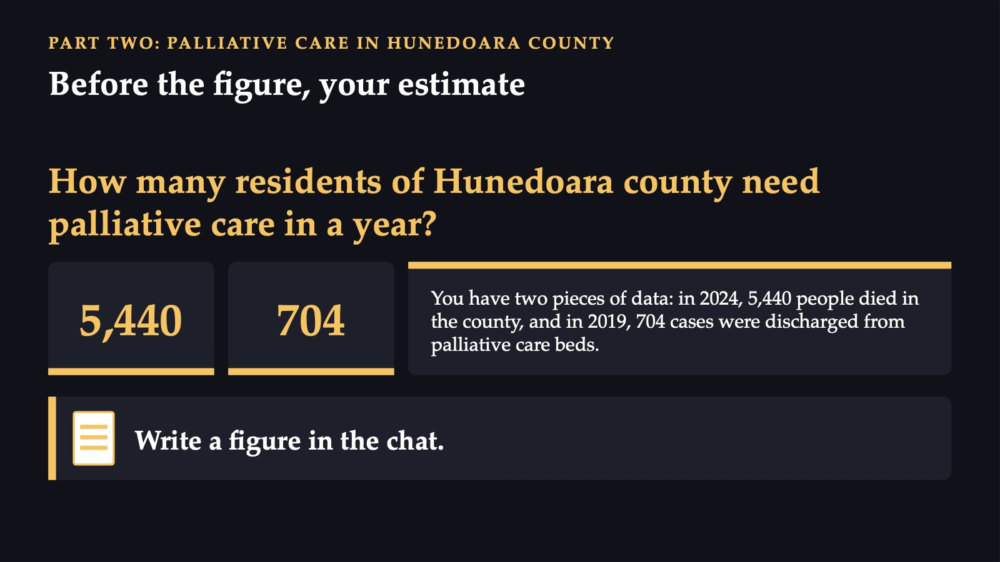
21 / 67Write a figure in the meeting chat, without long calculations. What matters is the order of magnitude and what you started from.
5,440
![PART TWO: PALLIATIVE CARE IN HUNEDOARA COUNTY A method of estimation: we start from deaths Many of those who die of progressive chronic diseases, such as cancer, heart failure or dementia, have in their last months symptoms and needs that can be relieved by palliative care. We assume, following a 2017 study for England and Wales, that approximately 75% of people nearing the end of life could benefit from it. 5,440 × 0.75 = 4,080 For Hunedoara: 5,440 deaths × 0.75 = 4,080 people in a year. The figure shows an order of magnitude, not a measurement: every 10 percentage points more or less change the result by 544 people.](diapozitive/C02/022.jpg) 22 / 67
22 / 67Annual need is the number of deaths multiplied by the proportion of deaths preceded by a need for palliative care. The proportion is an assumption, taken from a study for England and Wales; for Romania, the course sources do not contain a validated estimate. Not all those counted need a specialist service: many can be cared for by the family doctor and the home care team.
17.3%
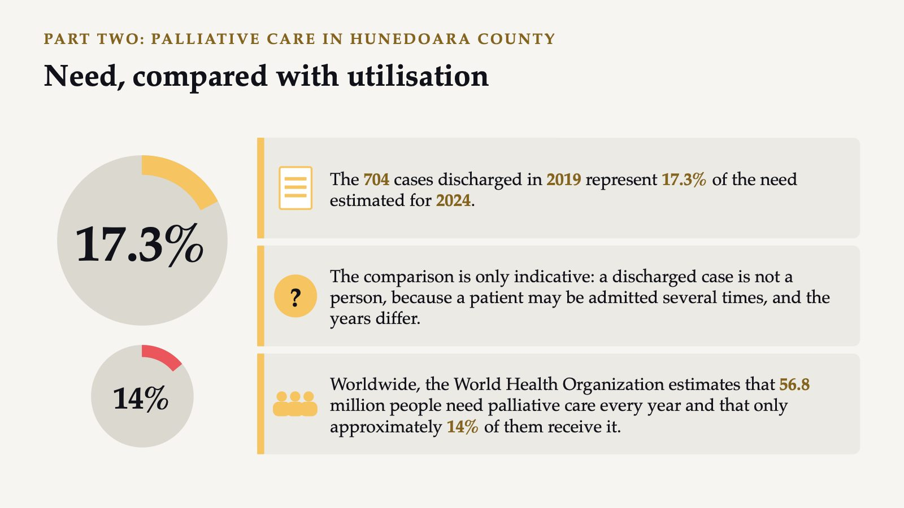
23 / 67The planner's first figure is the estimate of need in the population served; the standard, demand and utilisation are read against it. Now return to the claim about the occupancy rate: it measures how much of the capacity was used, not how many people are in need.
3.5
![PART TWO: PALLIATIVE CARE IN HUNEDOARA COUNTY A third route: the recommended standard A standard is a number of services relative to the population, set by professional consensus. The benchmark of the European Association for Palliative Care (EAPC): per 200,000 population, at least one hospital support team, which supports the care of patients admitted to other wards, and one inpatient service; per 100,000 population, one home care team. 3.5 16–24 An inpatient service has, optimally, between 8 and 12 beds. For Hunedoara, the benchmark gives 3.5 home care teams and 1.8 inpatient services, that is, approximately 16–24 beds.](diapozitive/C02/024.jpg) 24 / 67
24 / 67The standard has the advantage of simplicity and comparability, but it assumes that the population to which it is applied resembles the one for which it was set.
Two standards give different figures for the same county
![PART TWO: PALLIATIVE CARE IN HUNEDOARA COUNTY Two standards give different figures for the same county The plan's norm, applied to the 351,253 inhabitants of 2025, gives 70.3 beds, 8.8 home care teams and 5.9 outpatient clinics. The EAPC benchmark gives 3.5 home care teams and 16–24 beds. The plan's norm 70.3 beds The EAPC benchmark 16–24 beds The plan's norm 8.8 home care teams The EAPC benchmark 3.5 home care teams The figures differ by more than a factor of two, so neither standard can replace the estimation of need. ? Both have the same limitation: a standard counts inhabitants, not deaths.](diapozitive/C02/025.jpg) 25 / 67
25 / 67An ageing county has, for the same number of inhabitants, more deaths and therefore more need for palliative care than a young county. The standard remains a benchmark for comparisons between counties or countries.
9.4%
 26 / 67
26 / 67The official projection shows two opposite trends. A plan that started from the total population would propose fewer services; one that starts from age groups would propose more.
Why demand and utilisation change: four families of factors
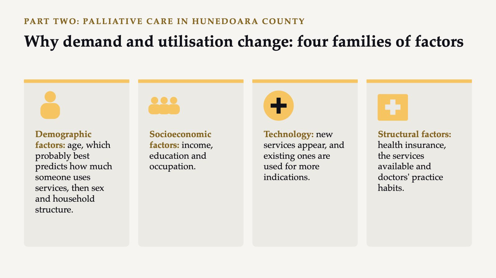
27 / 67For the planner, each factor is a question to ask about the population served. For palliative care at home, the presence of an available carer is often a condition of the service.
Elasticity of demand
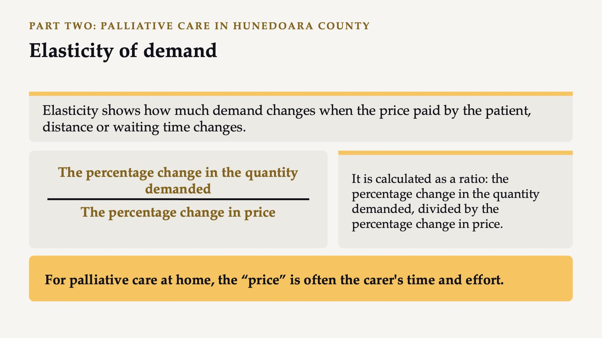
28 / 67If demand falls by less than the price rises, it is inelastic; if it falls by more, it is elastic. Elasticity is not only about price: a service moved far away loses the patients who have no transport.
Two ways of projecting deaths in 2040
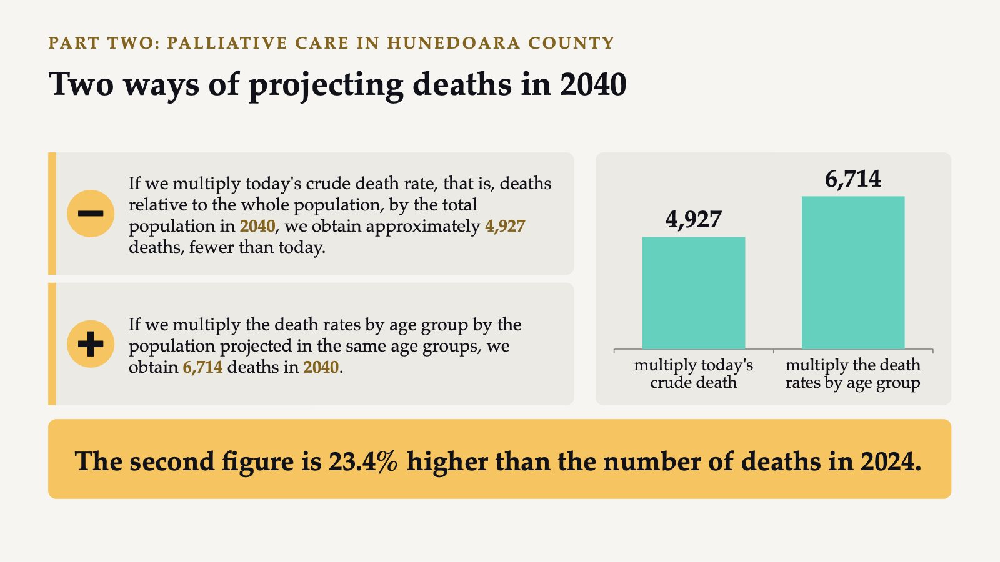
29 / 67If we know how many deaths there are today per thousand people in an age group and how many people the group will have in 2040, we find how many deaths it will produce; then we add up all the groups. The difference between the two calculations comes from ageing.
Hunedoara, 2025–2050: population, deaths and the need for palliative care
![PART TWO: PALLIATIVE CARE IN HUNEDOARA COUNTY Hunedoara, 2025–2050: population, deaths and the need for palliative care In 2025: 351,253 inhabitants, of whom 18,047 aged 80 and over; 5,440 deaths; need, 4,080 people. In 2030: 341,519 inhabitants, of whom 21,126 aged 80 and over; 5,847 deaths; need, 4,385 people. In 2035: 329,315 inhabitants, of whom 25,509 aged 80 and over; 6,350 deaths; need, 4,763 people. In 2040: 318,152 inhabitants, of whom 28,931 aged 80 and over; 6,714 deaths; need, 5,036 people. In 2050: 297,012 inhabitants, of whom 32,771 aged 80 and over; 6,975 deaths; need, 5,231 people. The deaths in the 2025 row are those of 2024; the following years are a projection (Eurostat, baseline scenario).](diapozitive/C02/030.jpg) 30 / 67
30 / 67The county's need for palliative care would rise from 4,080 to 5,036 people a year by 2040, although the total population falls. You have the figures for 2024 and 2040 in the annex.
The assumptions of the projection are written down explicitly
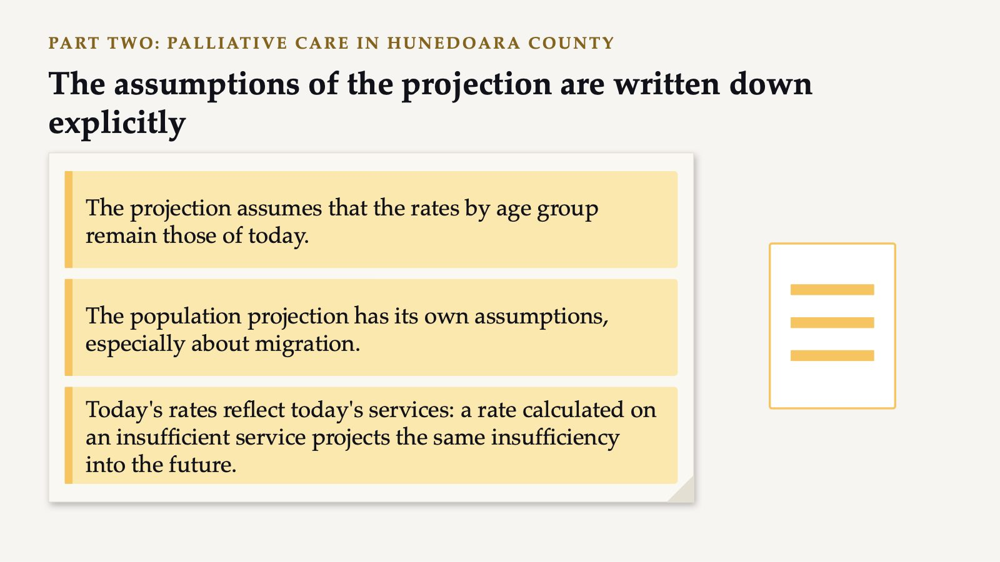
31 / 67A projection is an extrapolation of assumptions, not a forecast. The planner writes them down explicitly, so that the reader knows what would change if an assumption were false.
Calculation annex, part one: palliative care beds in Hunedoara
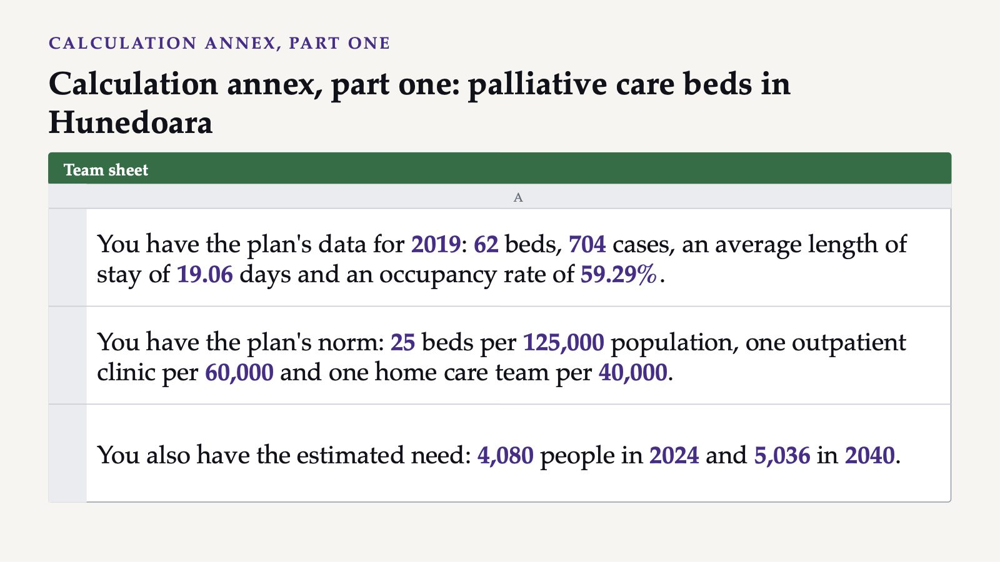
32 / 67Now move into the separate rooms. You have the plan's data, its norm and the estimate of need. From them you write the first part of the calculation annex.
The three tasks
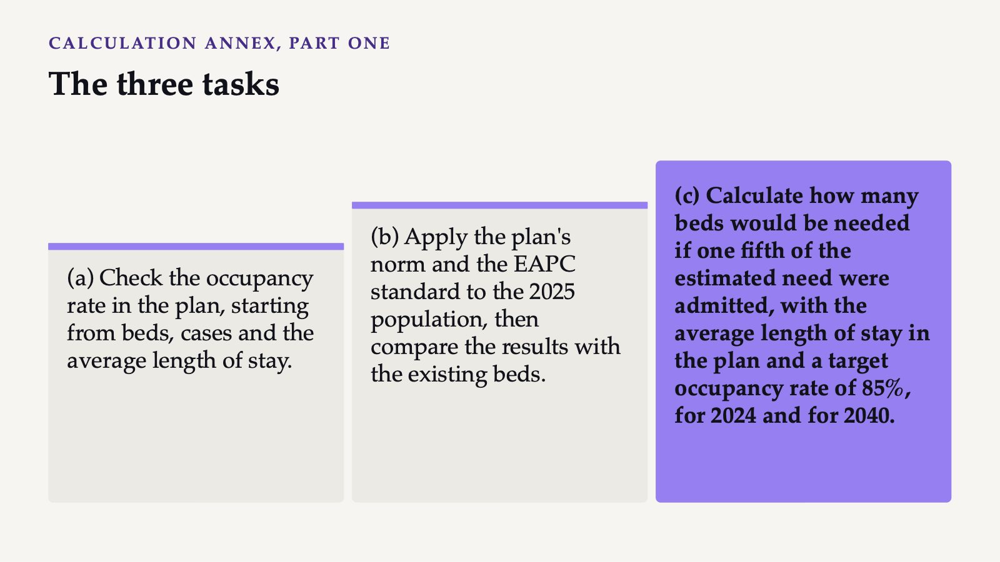
33 / 67There are three tasks, done in order. In the third, the assumption is yours: you may change it, if you write it down.
40
![CALCULATION ANNEX, PART ONE What the team hands in 40 min The spreadsheet with the three tasks, completed in the meeting's Excel file. Two short sentences, of at most 200 characters each: 1. How many beds would you propose for the county and what assumption supports the figure? 2. Which service outside the hospital (the home care team, the outpatient clinic) would change the figure most, and why? You have 40 minutes, in the separate rooms. When you return, the two questions appear one by one in Mentimeter; one team member sends the sentences, starting with the team's name.](diapozitive/C02/034.jpg) 34 / 67
34 / 67The output is what a planner would put in the annex of a plan: the calculation and its assumption, in two sentences that someone who was not in the room can read.
The answer appears after the session
The answer appears after the session
The answer appears after the session
The answer appears after the session
The answer appears after the session
The answer appears after the session
Break
38 / 67Stroke: the same question, asked the other way round
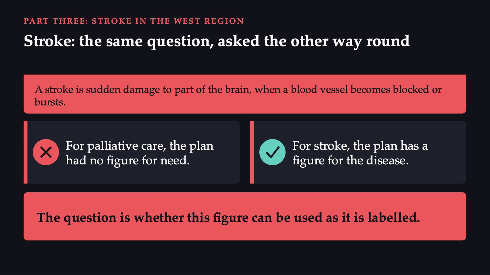
39 / 67Part two started from a need estimated from deaths. For stroke, the plan has a figure for the disease, and the question is whether we can use it.
The stroke patient pathway, in the plan's working draft
![PART THREE: STROKE IN THE WEST REGION The stroke patient pathway, in the plan's working draft Specialist outpatient care: consultations, but also the laboratory, functional investigations and imaging. Prehospital emergency care, that is, care until arrival at hospital, and day hospitalisation. Acute inpatient care: neurology and neurosurgery, the stroke unit, early neurological rehabilitation, intensive care and the angiography laboratory for thrombectomy, that is, for removing the clot from the vessel. Finally, chronic inpatient care, with neurological rehabilitation, and home care.](diapozitive/C02/040.jpg) 40 / 67
40 / 67The plan's working draft, unpublished, describes by level of care the services a stroke patient needs. In the published plan, the disease does not have its own pathway; it appears as a row of the health status profile in the annex. Read the pathway and look for what is missing from it.
What is missing from the pathway
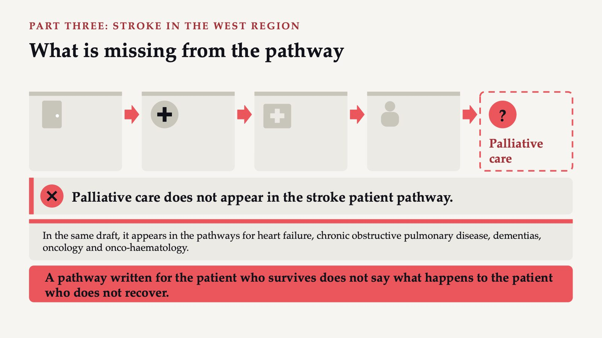
41 / 67You will meet this gap again in the second part of the annex, when you see at what ages deaths fall.
A figure called incidence
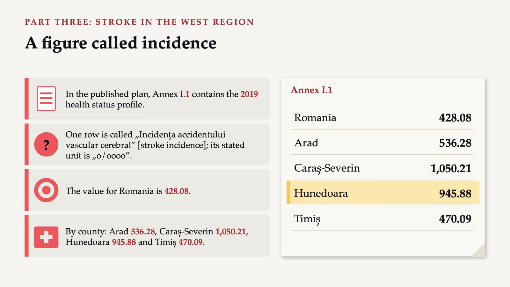
42 / 67This is the row in the published plan. You see it in the document, as it appears.
?
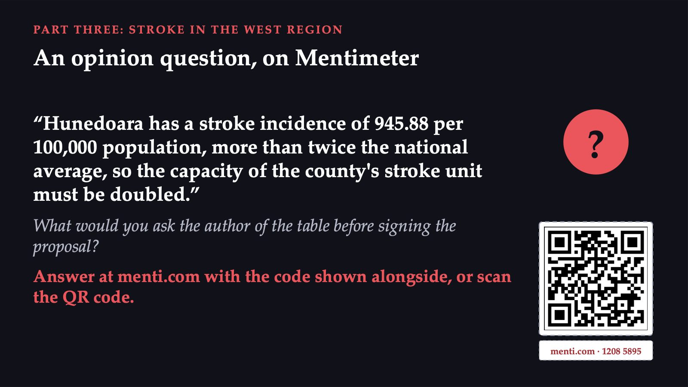
43 / 67You receive this proposal for signature. Write a question you would ask the author of the table before signing.
What the table does not say
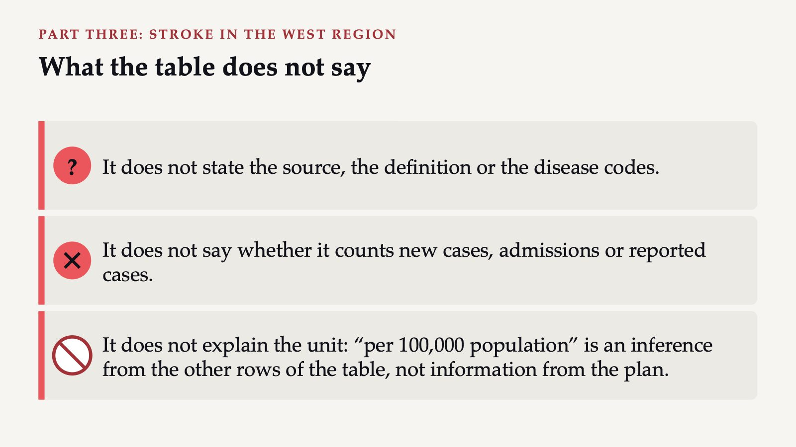
44 / 67The label of a row does not say what the row counts. Your questions are the ones the table does not answer.
Checking against a defined series
![PART THREE: STROKE IN THE WEST REGION Checking against a defined series A defined series states exactly what it counts, by which codes and from which source. In 2019, Eurostat recorded discharges with a principal diagnosis of cerebrovascular disease, that is, diseases of the blood vessels of the brain (codes I60–I69): 550.8 per 100,000 population in Romania and 530.7 in the West region. The plan's national value, 428.08, is lower than discharges (the ratio is 0.78). The plan's population-weighted county average is 676.9, i.e. higher (ratio 1.28). National value 428.08 Eurostat 550.8 County average 676.9 Eurostat 530.7](diapozitive/C02/045.jpg) 45 / 67
45 / 67The Eurostat category is broader than acute stroke. A lower national value could be explained by a narrower definition, but the county average, higher than discharges in the broad category, cannot be explained in this way. The plan does not use the same definition or the same source.
?
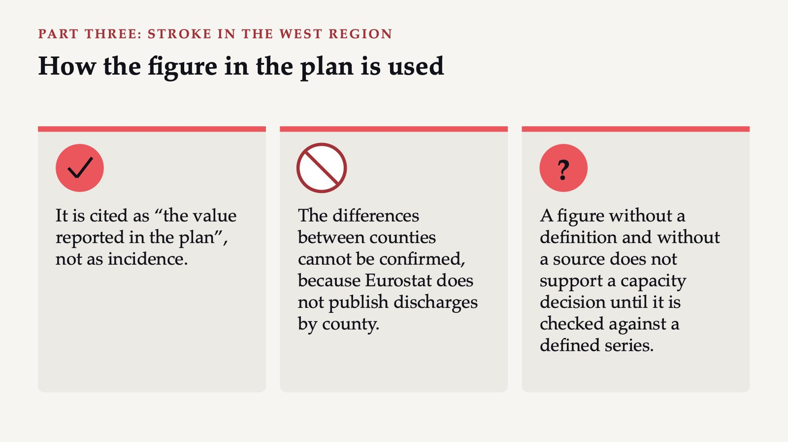
46 / 67The order of magnitude appears closer to that of hospitalised cases than to that of new cases; this is an inference of the notes, and the cause remains a hypothesis.
66.3%
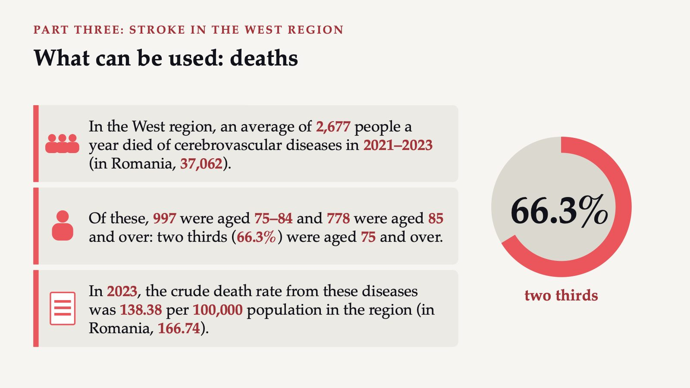
47 / 67Eurostat does not publish the annual number of deaths by region, but the three-year average and the annual rate. What can be seen clearly is the age at which deaths fall.
What can be used: discharges
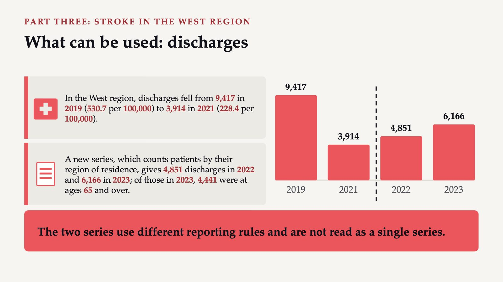
48 / 67The fall during the pandemic years has no verified explanation here. For the projection, what matters is which level you choose as the starting point: the post-pandemic level or the pre-pandemic one.
The population of the West region, from 2025 to 2040
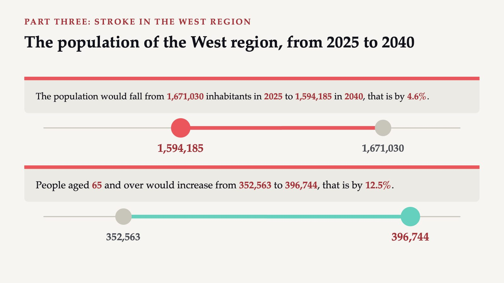
49 / 67The same situation as in Hunedoara, at the scale of the region: the population falls, and older people become more numerous.
34.0%
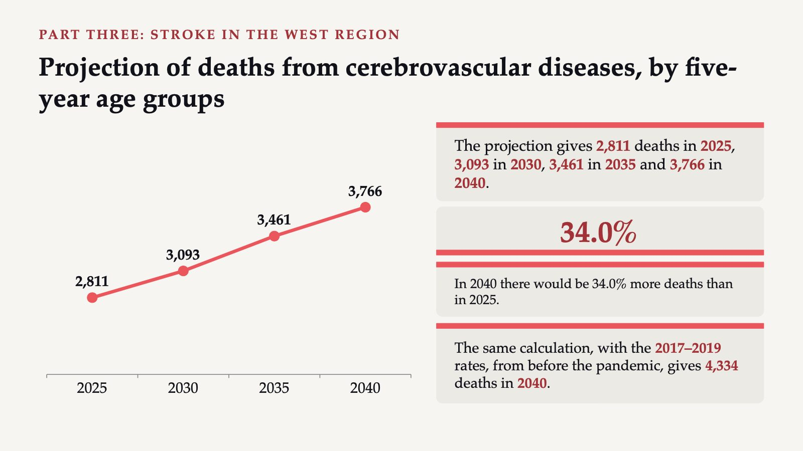
50 / 67The age-specific rates of the 2021–2023 average are applied to the population projected in the same groups. The result depends on the years from which you take the rates.
What can be done and what cannot be done with these data
 51 / 67
51 / 67This is where the second part of the annex starts: where the stroke unit, rehabilitation and home care will be in demand.
Calculation annex, part two: stroke in 2040
![CALCULATION ANNEX, PART TWO Calculation annex, part two: stroke in 2040 You have, for four age groups, the death rate from cerebrovascular diseases per 100,000 population and the population of the West region in 2025 and in 2040. Team sheet A Under 65: the rate is 21.5; the population, 1,318,467 in 2025 and 1,197,441 in 2040. At ages 65–74: the rate is 290.6; the population, 213,641 and 212,190. At ages 75–84: the rate is 969.1; the population, 106,391 and 130,060. At 85 and over: the rate is 2,690.0; the population, 32,531 and 54,494. In total, the region has 1,671,030 inhabitants in 2025 and 1,594,185 in 2040.](diapozitive/C02/052.jpg) 52 / 67
52 / 67Work in the same teams, with the same method as in part two: the rate by age group, multiplied by the population projected in the same groups.
30
![CALCULATION ANNEX, PART TWO The three tasks and what the team hands in 30 min (a) Calculate the deaths in 2040 for each age group and the total. ? (b) Compare the total with the projection by five-year age groups (3,766 deaths) and explain where the difference comes from. (c) Write down what a plan would decide on the basis of the projection and what assumptions it hides. The team hands in the completed sheet and three short sentences (200 characters each): the decision, the assumption that would change it most and a question for the author of the “incidence” row in the plan. You have 30 minutes, in the separate rooms. When you return, the three questions appear one by one in Mentimeter.](diapozitive/C02/053.jpg) 53 / 67
53 / 67For the third task, think of all the levels of the pathway: the stroke unit, early rehabilitation, rehabilitation for chronic patients, home care, palliative care.
The answer appears after the session
The answer appears after the session
The answer appears after the session
The answer appears after the session
The answer appears after the session
The answer appears after the session
Second break
57 / 67Two limitations of the data, a single tool
 58 / 67
58 / 67The first three parts showed two limitations of the data. For both, the tool is community health needs assessment, which you apply individually in the first practical activity.
The steps of needs assessment
 59 / 67
59 / 67A needs assessment that does not end with an implementation plan is a report, not a planning tool.
The community profile, in the first practical activity (PA1)
![PART FOUR: COMMUNITY HEALTH NEEDS ASSESSMENT The community profile, in the first practical activity (PA1) Population: age, sex, household structure, income, education. Health status: morbidity, that is, the diseases in the population, mortality by cause and by age, and the social determinants, that is, the social conditions that influence health. Resources: health facilities, services, staff, funding and community assets, that is, non-governmental organisations, religious denominations and volunteers. PA1 is done individually, on a county other than Hunedoara.](diapozitive/C02/060.jpg) 60 / 67
60 / 67Today's two problems appear in the profile. For health status, an indicator makes sense only if you know what it counts. For resources, add to the hospital figures where older people live, how many live alone and what services exist outside the hospital.
A well-formulated problem says who, how many and with what trend
 61 / 67
61 / 67Synthesis sets needs and resources side by side and formulates the problems. Compare the two formulations with the sentences in your annex.
Why were the beds not full?
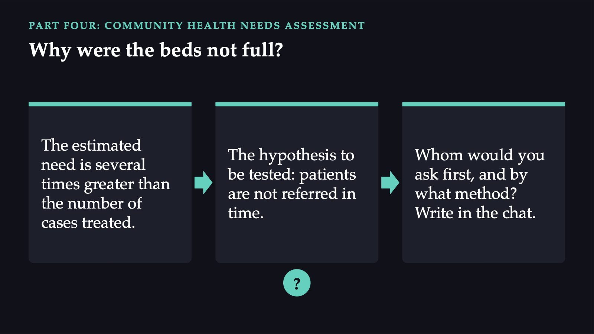
62 / 67The annex left a question open. Write in the chat whom you would ask first and by what method.
First we find out “why”, then we measure “how much”
 63 / 67
63 / 67Questions of the “why” type are better answered by qualitative methods, which uncover unanticipated explanations. The insurance house data say how much was reimbursed, not why it was not requested. Quantitative methods then measure what the qualitative ones have found.
Data sources and their limitations
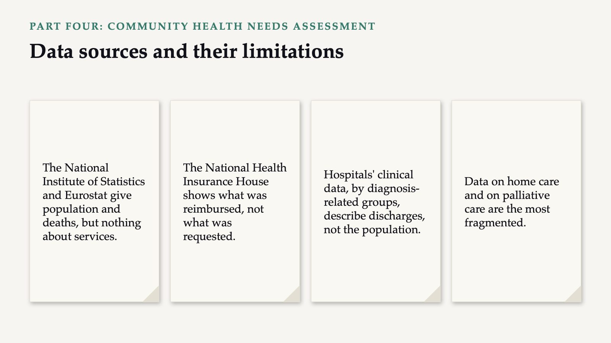
64 / 67A needs assessment uses the sources together and writes down, for each figure, where it comes from, what year it refers to and what it cannot tell. This is how you will also write the profile in the first practical activity.
The teams' annexes
 65 / 67
65 / 67Listen to your colleagues' annexes as a planning committee would: the figure, the assumption and what happens if the assumption fails. The course leader comments on each annex, especially on the choice of assumptions.
What you do differently on Monday morning
![PART FIVE: THE TEAMS' ANNEXES What you do differently on Monday morning When you are offered a new service, first ask how many people need it and how the figure was estimated. Ask separately for the standard, expressed demand and current utilisation. When you receive a figure called incidence, prevalence or requirement, look for the definition, the source and the year, and check it against a defined series. One minute of writing: what do you change now in the sentence from the beginning of the module?](diapozitive/C02/066.jpg) 66 / 67
66 / 67Return to the sentence you wrote at the beginning, about the service you know. Write in the chat what you would change in it now.
?
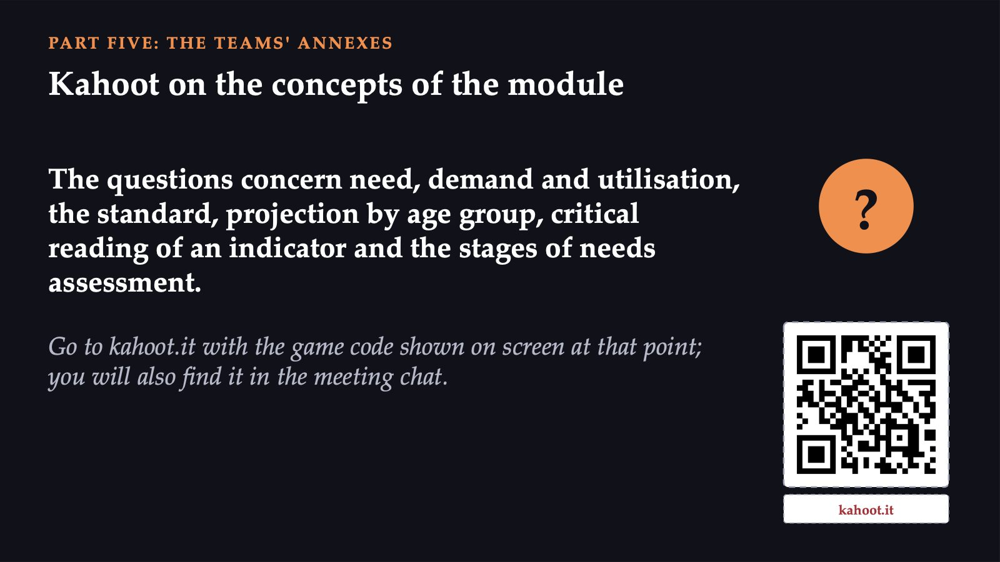
67 / 67We end with a Kahoot on today's concepts. The full notes of the module appear on its page tomorrow.
Arrows or space: navigate · O: overview · N: speaker notes · F: full screen · Esc: close